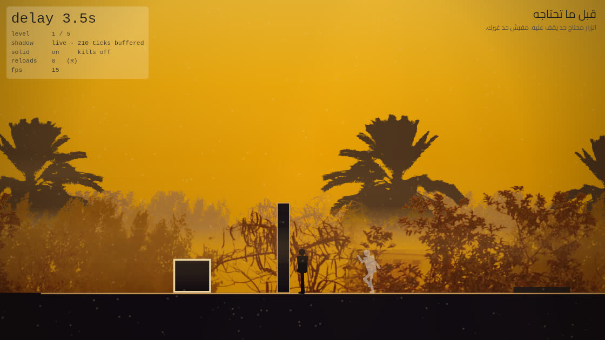

الفكرة
ظلك بيعيد كل حاجة عملتها، بعد كام ثانية ثابتة. وهو ماشي بيعيد، بيبقى حاجة حقيقية في الدنيا — تقف عليه، يقف في طريقك، أو يمسكك.
يعني لو عايز زرار يفضل مدوس هناك، لازم تروح تقف عليه انت بنفسك قبلها بشوية، وبعدين تمشي وتكون في مكان تاني لما نفسك القديمة توصل وتدوسه. فبتقضي اللعبة وانت بتعمل حاجات شكلها ملهاش لازمة، وانت عارف إنها الحل لمشكلة لسه موصلتش لها.
مفيش زرار تسجيل ومفيش رجوع بالوقت. التأخير شغال سواء انت جاهز أو لأ، وده اللي بيخلي الإحساس أقرب لإنك متطارد من إنه لغز هادي.

التحكم
كمبيوتر
موبايل
عن المشروع
خمس مراحل لحد دلوقتي، كل واحدة بتعلّم استخدام واحد للفكرة وبعدين تسيبه: الزرار، المنصة، العقبة، التضحية، وبعدين الاتنين مع بعض. التأخير بيتغير من مرحلة للي بعدها — نفس التصميم بتأخير تاني بيبقى لغز تاني.
المكان مصر المعاصرة، مش مصر القديمة. كل حاجة غامقة في الصورة فوق دي صورة فوتوغرافية لمكان حقيقي، متقصوصة silhouette ومتحطة في طبقات.
مشروع شخص واحد، يوم في الأسبوع، بـFlutter وFlame. الكود كله مفتوح على GitHub.
In English: you do not control your shadow — you control what it will do a few seconds from now. It repeats everything you did, that long ago, and it is a real thing in the world while it does it: something to stand on, something in your way, something that can catch you. Five puzzles, in the browser, no install. Built in Flutter and Flame, one day a week. Source on GitHub.